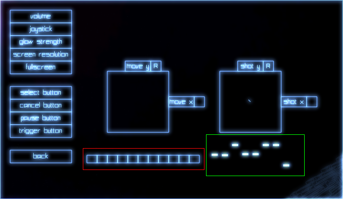

multiplex > 設定について
volume
BGMとSEの音量を設定します。
joystick
複数のコントローラを接続している場合に選択できます。
glow strength
グローの強さを設定します。
screen resolution/fullscreen
起動時の画面サイズとフルスクリーンの有無を選択します。autoはフルスクリーンではモニタのサイズに、ウィンドウでは1200x675となります。
画面解像度が大きいほど負荷が大きくなります。
back
タイトルメニューへ戻ります。
button
各機能にコントローラのボタンを割り当てます。コントローラのボタンを押すと赤枠の四角が光るので、対応する数値を選びます。
- select: 決定
- cancel: キャンセル
- pause: ポーズ
- trigger: 特殊武器。pulseモードの場合はボム
move x/y, shot x/y
それぞれ移動/ショットに使う軸を設定します。緑枠の部分が各軸の動きを表しています。コントローラのスティックに同期するように設定します。Rにチェックすると上下/左右が反転します。